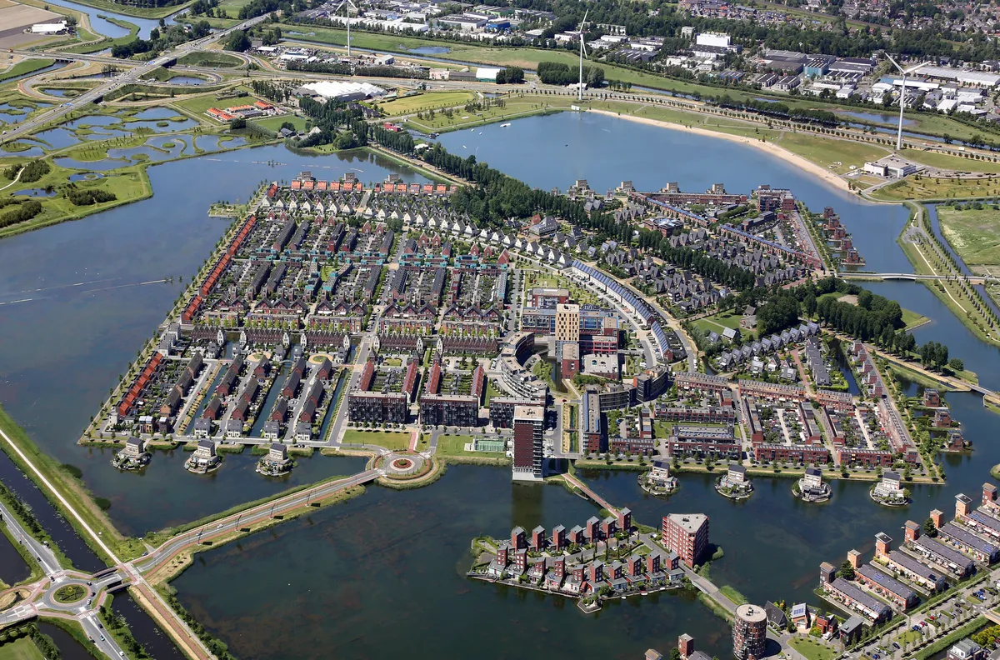

Website laten maken
in Heerhugowaard
Hoe pak je dat aan, een website die klanten oplevert? Voor ondernemers in Heerhugowaard hoeft dat geen theorie te blijven: Tekenbureau Winter ging je voor. In dit artikel lees je hoe dat project verliep en wat jij ervan kunt gebruiken.

Heerhugowaard is een stad van aanpakkers. Sinds de fusie tot de gemeente Dijk en Waard is het, samen met Langedijk, een van de grootste woon- en werkgebieden boven Alkmaar: nieuwbouwwijken, een groot winkelhart rond Middenwaard en flink wat bedrijvigheid in de bouw en techniek. Juist in zo'n groeiende omgeving geldt: wie online niet te vinden is, bestaat voor nieuwe inwoners simpelweg niet. Hoe je dat oplost, laat een ondernemer uit Heerhugowaard zelf het beste zien.
Het verhaal van Tekenbureau Winter
Tekenbureau Winter is een bouwkundig tekenbureau uit Heerhugowaard. Denk aan tekenwerk voor een aanbouw, verbouwing of nieuwbouwplan: het soort vakwerk waar particulieren en aannemers uit de regio op zoeken zodra er verbouwplannen zijn. Precies het type bedrijf dat veel te winnen heeft bij een sterke lokale website, want de eerste kennismaking gebeurt bijna altijd via Google.
Voor Tekenbureau Winter verzorgden we het complete plaatje: een maatwerk website, de branding eromheen en professionele fotografie. Geen stockfoto's van willekeurige bouwvakkers, maar echt beeld van het bureau en het werk. De site laat in één oogopslag zien wat het tekenbureau doet, voor wie, en hoe je contact opneemt. En na de livegang stopte het niet: wij beheren de site, houden hem snel en veilig, en zijn bereikbaar als er iets moet veranderen.
Wat dit project laat zien
Achter dit ene klantverhaal zitten drie lessen die voor elke ondernemer in Heerhugowaard gelden:
- Duidelijkheid wint. Een bezoeker moet binnen een paar seconden zien wat je doet en waar je zit. Bij een tekenbureau betekent dat: je diensten benoemd zoals klanten erop zoeken, van bouwkundig tekenwerk tot een tekening voor de vergunningaanvraag.
- Echt beeld verkoopt. Eigen fotografie maakt het verschil tussen een anoniem bedrijf en een herkenbaar gezicht. Zeker lokaal, waar mensen graag weten met wie ze aan tafel zitten.
- Een website is nooit af. Beheer, updates en snelle support horen erbij. Een verouderde of trage site kost op den duur meer dan hij ooit heeft opgeleverd.
Lokaal gevonden worden in Heerhugowaard
Heerhugowaard heeft een eigen dynamiek: de stad groeit, er komen doorlopend nieuwe inwoners bij en die kennen de gevestigde namen nog niet. Zij zoeken op "aannemer Heerhugowaard", "kapper Middenwaard" of "tekenbureau Dijk en Waard". Zo zorg je dat jij dan bovenaan staat:
- Verwerk plaatsnamen als Heerhugowaard, Dijk en Waard, Langedijk en Alkmaar natuurlijk in je teksten en paginatitels.
- Maak een gratis Google Bedrijfsprofiel aan, zodat je in de kaartresultaten verschijnt.
- Vraag tevreden klanten om een Google-review. Tekenbureau Winter laat zien hoe overtuigend één echt klantwoord is.
- Houd je adres, telefoonnummer en openingstijden overal exact gelijk.
Meer weten over hoe dit werkt? In ons artikel over lokale SEO leggen we het stap voor stap uit; de aanpak is in Heerhugowaard precies hetzelfde.
Wat kost een website in Heerhugowaard?
Hetzelfde als overal bij Brand-On, want we werken met vaste pakketten. Het Starter pakket kost 750 euro en bevat een complete website van vijf pagina's. Het Professioneel pakket van 1500 euro is uitgebreider: tien pagina's, professionele fotografie en sterke lokale SEO, vergelijkbaar met wat we voor Tekenbureau Winter maakten. Op de tarievenpagina zie je precies wat er in elk pakket zit.
Zelf aan de slag?
Brand-On is een webdesignstudio uit Purmerend, met onze ontwerper in Limmen. Heerhugowaard ligt daar precies tussenin, dus een kennismaking op locatie is zo geregeld. Wil je eerst zien wat we maken? Bekijk onze projecten, waaronder de site van Tekenbureau Winter. Of vraag direct een gratis concept aan: dan bouwen we vrijblijvend een voorproefje van jouw nieuwe website.
Zo beviel het
Tekenbureau Winter.
Deze heren hebben voor mij een prachtige website opgezet en beheren deze heel goed. Alles was super duidelijk en de communicatie was echt top!! Als ik een website maker zou aanraden dan zijn het zeker deze heren. Top mannen bedankt!

Website laten maken in Heerhugowaard
Maken jullie ook websites voor ondernemers in Heerhugowaard?
Ja. Brand-On is gevestigd in Purmerend en onze ontwerper zit in Limmen, dus Heerhugowaard ligt midden in ons werkgebied. Voor Tekenbureau Winter uit Heerhugowaard verzorgden we de website, de branding en de fotografie, en we beheren de site nog steeds.
Wat kostte een website zoals die van Tekenbureau Winter?
Onze pakketten zijn voor iedereen gelijk: het Starter pakket met vijf pagina's kost 750 euro en het Professioneel pakket met tien pagina's, fotografie en uitgebreide SEO kost 1500 euro. Wat erin zit staat vooraf vast, dus je komt niet voor verrassingen te staan.
Hoe word ik als bedrijf in Heerhugowaard beter gevonden in Google?
Richt je website in op lokale zoekopdrachten met plaatsnamen als Heerhugowaard, Dijk en Waard en Alkmaar, maak een gratis Google Bedrijfsprofiel aan en verzamel reviews van klanten uit de regio. Een snelle, verzorgde website doet daarna de rest.
Verzorgen jullie na de livegang ook het beheer van de website?
Ja. Hosting, updates en technische support horen bij onze aanpak. Zo blijft je site snel en veilig, en heb je bij vragen direct contact met de mensen die hem gebouwd hebben, zonder tussenlagen.
Gerelateerde artikelen
Laten we jouw merk
aanzetten.
Benieuwd hoe jouw website eruit kan zien? Vraag een gratis concept aan, helemaal vrijblijvend. Je ziet met eigen ogen wat een sterke lokale site voor je bedrijf kan doen, met een persoonlijk antwoord binnen één werkdag.